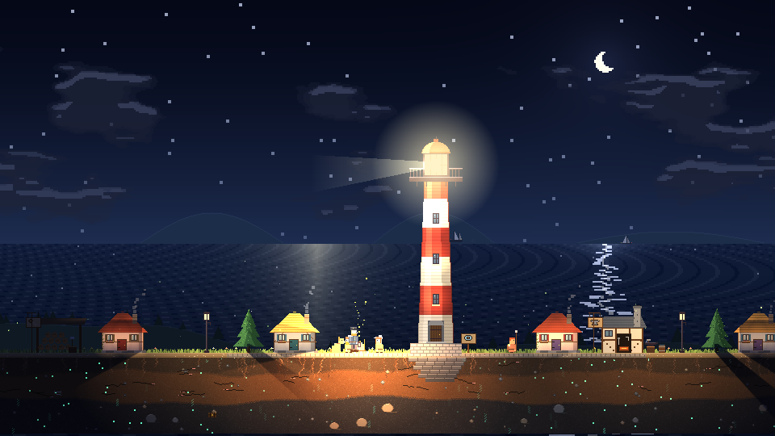
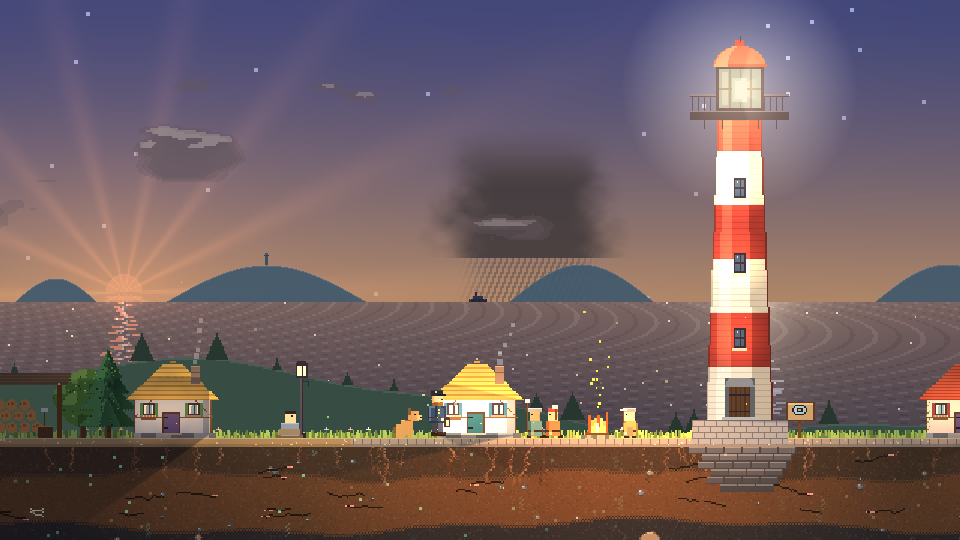
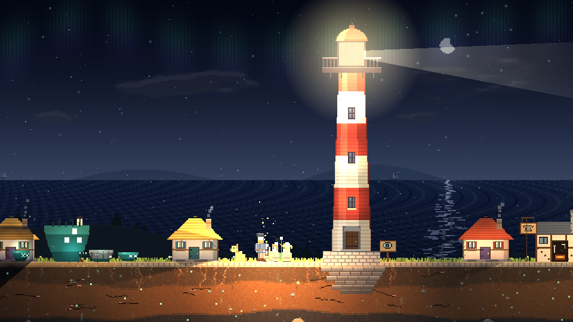
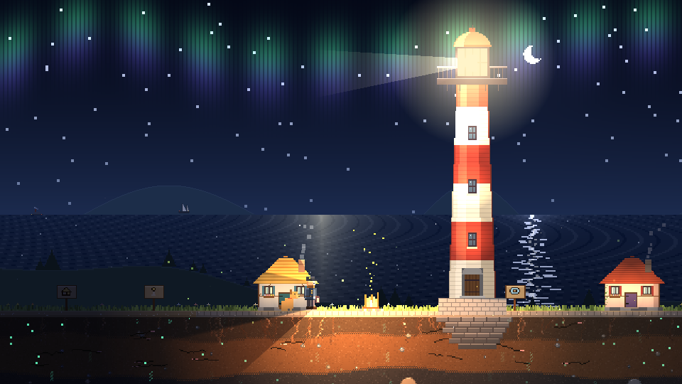
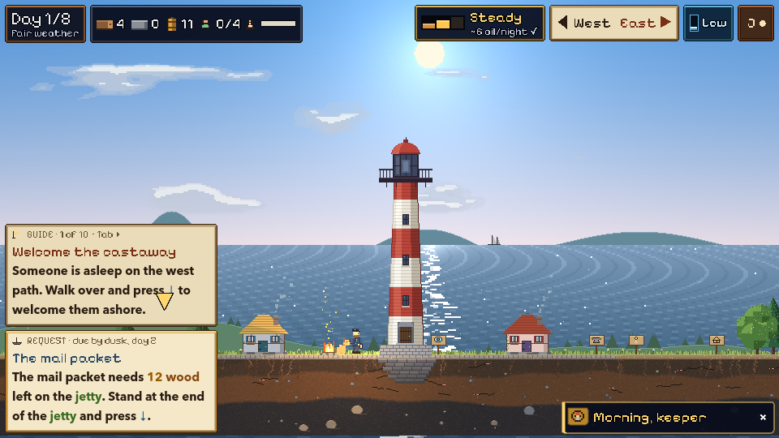

A season of 13 nightsСезон из 13 ночей
Keep the light burning until the Great Storm passes. A brighter lamp guides more ships to your jetty, and draws more of the things that live under the tide. Не дайте свету погаснуть, пока не пройдёт Великий шторм. Чем ярче лампа, тем больше кораблей приходит к вашей пристани — и тем больше тварей поднимается из-под прилива.
Free · keyboard · desktop browsers · about 40 minutes a seasonБесплатно · клавиатура · браузер на компьютере · около 40 минут за сезон
Chop timber, cut peat, welcome castaways and build up a little harbour village by day. When the sun goes down, the lamp burns your oil and the brinelings come up with the tide. Днём рубите лес, режьте торф, принимайте потерпевших и отстраивайте деревушку у гавани. Когда садится солнце, лампа жжёт ваше масло, а с приливом выходят рассольники.

Every newcomer has a trade: fisher, woodcutter, mason, harpooner, bell-ringer or sailor. Raise walls and harpoon towers, a fish-oil hut and a stone pit, cottages to house them, and a workshop for storm lanterns, boathooks and signal flares. У каждого новичка своё ремесло: рыбак, дровосек, каменщик, гарпунщик, звонарь или моряк. Ставьте стены и гарпунные башни, хижину ворвани и карьер, домики для жителей и мастерскую для штормовых фонарей, багров и сигнальных ракет.

Brinelings drink the lamp oil and crack the tower. Gloomgulls peck at the lamp, tunnel crabs dig under your walls, a siren sings your islanders into the sea, and spring tides bring them in waves, and on the thirteenth night the Great Storm brings two tidewyrms. Рассольники пьют масло лампы и крошат башню. Мрачные чайки клюют лампу, туннельные крабы роют под стенами, сирена уводит островитян в море, большие приливы гонят их волнами, а на тринадцатую ночь Великий шторм приносит двух приливных змеев.

Clear mornings, high cloud, haze, golden evenings, squalls out on the horizon, moon phases and the odd aurora. Ships and birds cross the horizon, and far out another lighthouse blinks three short, one long. Ясные утра, высокие облака, дымка, золотые вечера, шквалы на горизонте, фазы луны и порой северное сияние. По горизонту идут корабли и птицы, а вдали мигает другой маяк: трижды коротко, раз долго.

Undercurrents like drought, lean waters and cold snaps change the rules for a few days. Ships send requests with deadlines. Strange quiet nights ask you to choose. A guide walks you through your first two days. Подводные течения — засуха, скудные воды, заморозки — меняют правила на несколько дней. Корабли присылают просьбы со сроками. Тихие ночи ставят перед выбором. Первые два дня вас ведут подсказки.
Each island keeps its character; where everything lies changes every season.У каждого острова свой нрав, а расположение всего меняется каждый сезон.
Two wide beaches and thick woods. Kind currents bring castaways often. A good first season.Два широких пляжа и густые леса. Добрые течения часто приносят потерпевших. Хорошо для первого сезона.
Stone everywhere and hardly a tree. Timber comes from wrecks, driftwood and the chandlery.Камень повсюду, а деревьев почти нет. Древесину дают обломки, плавник и лавка.
Peat on both roads, but the fish run thin. Fog banks and sirens are common.Торф на обеих дорогах, но рыбы мало. Здесь часты туманы и сирены.
Twice the shipping and frequent distress calls. On a dim lamp, ships founder on the reef.Вдвое больше кораблей и частые сигналы бедствия. При тусклой лампе корабли разбиваются о риф.
Long, cold nights. Every cottage burns a piece of wood each night to keep warm.Долгие холодные ночи. Каждый домик сжигает за ночь по полену, чтобы не замёрзнуть.
Find every page of the old log to put it on the chart.Найдите все страницы старого журнала, чтобы нанести его на карту.